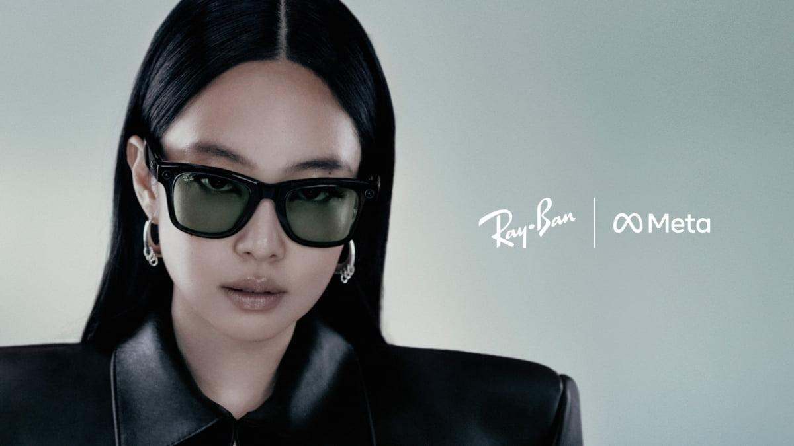
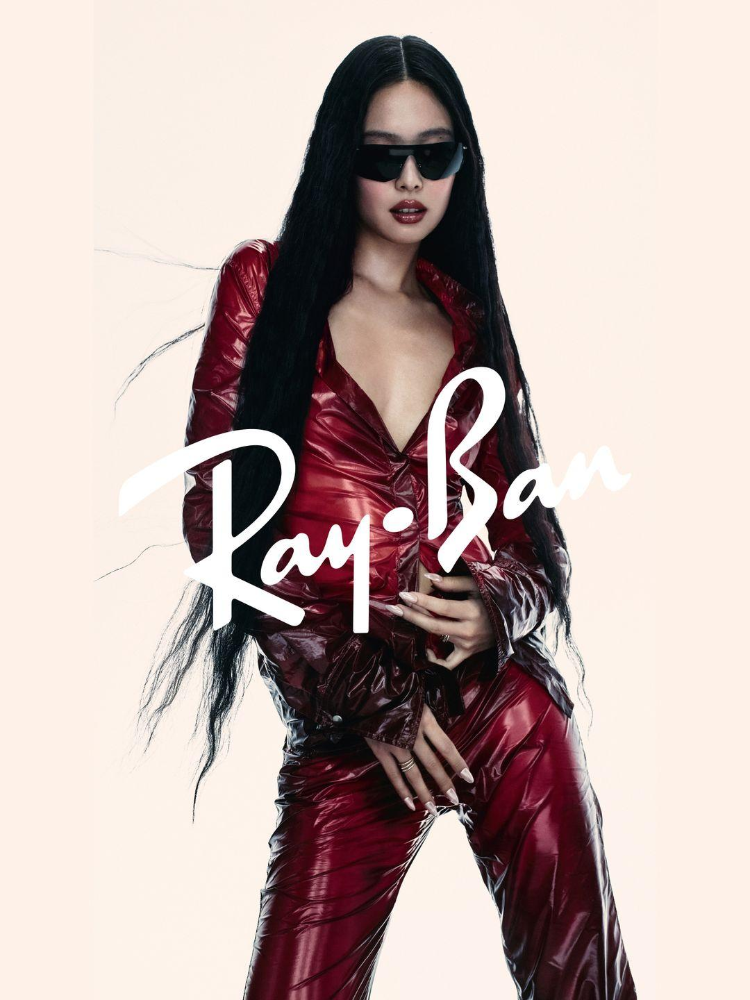
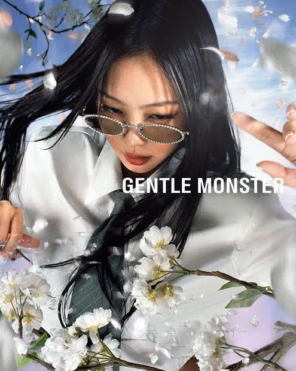
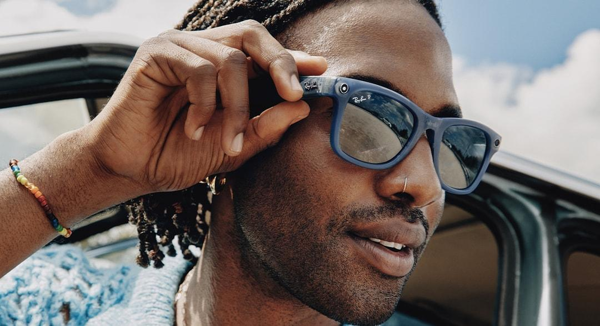
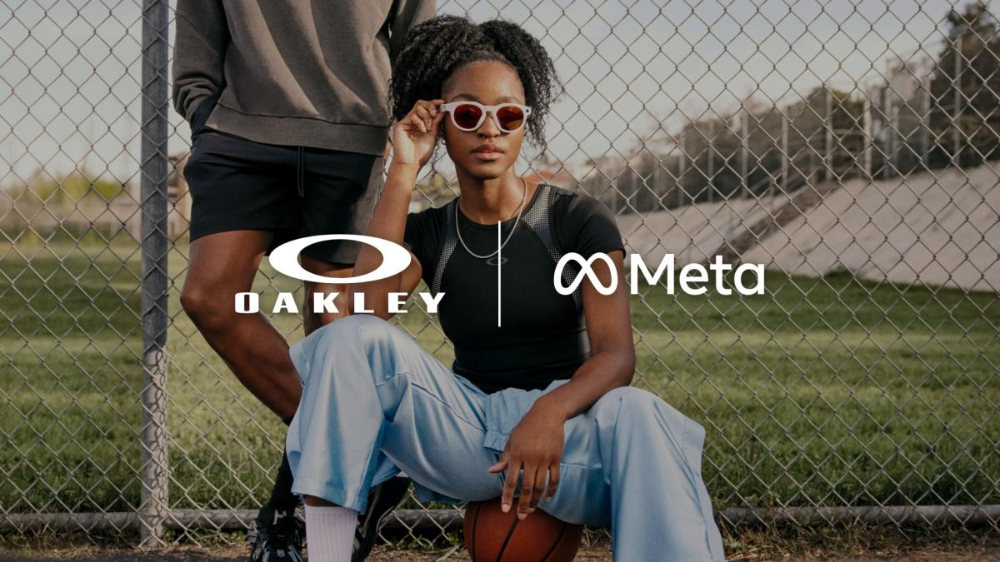
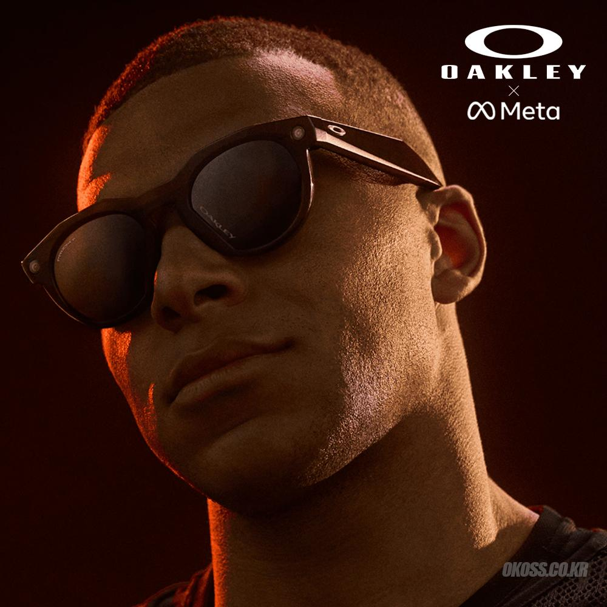
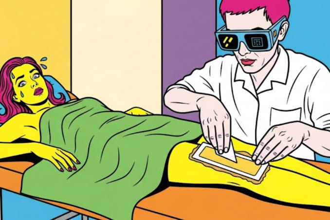

Wearables Finally Become Real Fashion웨어러블, 드디어 진짜 패션이 되다
Ray-Ban Meta finally launched in Korea. Smart glasses have had a rocky ride with plenty of drama. Even Google got burned in this market once, and now it's back as something you'd actually use day to day. And it came back with none other than mega-star Jennie.레이밴 메타가 드디어 한국에 출시됐다. 말도 많고 탈도 많았던 스마트 안경. 구글도 한번 쓴맛을 봤던 그 시장인데, 드디어 일상에서 쓸 만한 물건이 되어 돌아왔다. 그것도 무려 우주 대스타 제니와 함께.

Jennie left Gentle Monster to become a Ray-Ban model. When I first saw the campaign, I thought they were just pretty sunglasses. Turns out they're Meta's AI glasses. Take photos, shoot video, listen to music. Ask what's in front of you and the Meta AI inside explains it like it's nothing. Wearables have finally moved past the wrist and up to the face.젠틀몬스터를 떠나 레이밴 모델이 된 제니. 처음 화보를 봤을 땐 그냥 예쁜 선글라스인 줄 알았다. 알고 보니 메타의 AI 안경이더라. 사진 찍고, 영상 찍고, 음악 듣고. 눈앞에 있는 게 뭔지 물어보면 안에 들어간 메타 AI가 척척 설명해 준다. 드디어 웨어러블이 손목을 지나 얼굴로 올라온 거다.
Talk about timing. The moment Jennie became the face of Ray-Ban (Meta), her old "home turf" of sorts, Gentle Monster (the Samsung-Google alliance), announced its own smart glasses. Picture it. Jennie, once Gentle Monster's icon, now wears Meta's glasses, while the Gentle Monster that let her go straps on a Samsung chip to chase Meta. With tech and fashion all tangled up, the timing makes for a really fun setup.오비이락이랄까. 제니가 레이밴(메타)의 얼굴이 되어 나타나자마자, 그녀의 '친정집' 뻘인 젠틀몬스터(삼성 구글 연합)에서도 스마트 안경 출시를 예고하고 나섰다. 한때 젠틀몬스터의 아이콘이었던 제니가 이제는 메타의 안경을 쓰고, 제니를 떠나보낸 젠틀몬스터는 삼성의 칩을 달고 메타를 추격하는 그림. 테크와 패션이 얽힌 타이밍상 참 재미있는 구도가 만들어진 셈이다.


Ray-Ban Meta is basically a camera and AI assistant shaped like glasses. The screen-free 2nd gen dropped in September 2025 for $379, and the higher-end model with a tiny display inside the lens runs $800 and even comes with a wristband you control with your fingers. The one that landed in Korea this time is, of course, the basic version.이 레이밴 메타는 안경처럼 생긴 카메라 겸 AI 비서다. 화면 없는 2세대는 2025년 9월에 379달러로 나왔고, 렌즈 안에 작은 디스플레이가 뜨는 상위 모델은 800달러에 손가락으로 조작하는 손목 밴드까지 딸려 온다. 물론 이번에 한국에 들어온 건 기본형이다.
The numbers are pretty wild too. According to glasses maker EssilorLuxottica, they sold over 7 million units in 2025 alone. That's about triple the year before. With a 76 percent market share, it's basically a monopoly. The equation "smart glasses = Ray-Ban Meta" is starting to set in stone.성적도 꽤 놀랍다. 안경 제조사인 에실로룩소티카 얘길 들어보면 2025년에만 700만 대 넘게 팔렸단다. 전년 대비 세 배 수준이다. 시장 점유율 76퍼센트니까 사실상 독점이나 다름없다. 스마트 안경 하면 레이밴 메타라는 공식이 굳어지고 있다.

Why glasses, of all things? You have to look at what these companies are really after. Until now, AI has been a tenant living inside the smartphone. But the people holding that phone are Apple and Google. From Meta's point of view, you can't crash at someone else's place forever, so it desperately needed "my own device" to put its AI right in front of people's eyes. A perfect channel that leaves your hands free while feeding everything you see and hear straight to the AI. And that, it turns out, is glasses.왜 하필 안경일까. 회사들이 진짜 노리는 걸 봐야 한다. 지금까지 AI는 스마트폰 안에 세 들어 살았다. 근데 그 폰을 쥔 건 애플과 구글이다. 메타 입장에선 평생 남의 집에 얹혀살 순 없으니, 자기 AI를 사람들 눈앞에 바로 띄워줄 '내 기기'가 절실했다. 손은 자유로우면서, 보고 듣는 걸 그대로 AI에 넘길 수 있는 완벽한 통로. 그게 바로 안경인 셈이다.
And it's not just Meta riding this wave. Google teamed up with Samsung and Qualcomm to form the Android XR camp, and there are rumors that Samsung's glasses project in the works is codenamed "Pearl." China's Xiaomi and iFlytek are also pumping out translation-focused glasses. A category that crashed and burned with Google Glass has met AI and come roaring back in spectacular fashion after a decade-plus.이 흐름, 메타만 타는 게 아니다. 구글은 삼성 퀄컴이랑 손잡고 안드로이드 XR 진영을 꾸렸고 삼성이 준비 중인 글래스 프로젝트 코드명이 진주라는 소문도 돈다. 중국 쪽 샤오미나 아이플라이텍도 번역에 특화된 안경을 막 쏟아낸다. 한때 구글 글래스로 처참하게 망했던 카테고리가 AI를 만나 10여 년 만에 화려하게 부활한 거다.
The funny part is that Meta isn't just selling glasses, it's literally buying up glasses companies. In 2025 it bought $3.5 billion (about 5 trillion won) worth of shares in EssilorLuxottica, which makes Ray-Ban and Oakley. There's talk it'll bump that up to 5 percent soon. A tech company buying a stake in a fashion company is, frankly, pretty unusual.재밌는 건 메타가 그냥 안경만 파는 게 아니라, 아예 안경 회사를 사들이고 있다는 거다. 2025년에 레이밴이랑 오클리를 만드는 에실로룩소티카 지분을 35억 달러(약 5조 원)어치나 샀다. 조만간 5퍼센트까지 늘릴 거란 얘기도 나온다. 테크 회사가 패션 회사 지분을 사는 그림 자체가 참 이례적이다.


Why bother? Because glasses are pure fashion and a distribution game. A glasses company with 100-plus years under its belt knows that better than anyone. Meta supplies the AI and chips, while EssilorLuxottica supplies shelf space at eyewear shops worldwide and Ray-Ban's classic image. Meta basically bought its way to the one thing it's worst at, looking genuinely cool.왜 굳이? 안경은 철저히 패션이고 유통 싸움이니까. 그 노하우는 100년 넘은 안경 회사가 제일 잘 안다. 메타는 AI랑 칩을 대고, 에실로룩소티카는 전 세계 안경점 매대와 레이밴의 클래식한 이미지를 댄다. 메타가 제일 못하는 '진짜 멋있어 보이는 법'을 돈으로 산 셈이다.
Of course, it costs serious money. Meta's hardware division has racked up roughly $38 billion in losses over the last nine quarters. Glasses aren't a business that makes money today. They're a long-term bet, burning trillions of won a year to own the future AI platform. With Samsung and Google charging hard on the backs of hot brands like Gentle Monster, Meta's stance is simple. Take the painful losses now, but lock down the No.1 spot no matter what.물론 피 같은 돈이 들어간다. 메타 하드웨어 부문은 최근 9개 분기 동안 약 380억 달러 적자를 냈다. 안경은 당장 돈 버는 사업이 아니라, 미래 AI 플랫폼을 먹으려고 매년 조 단위 돈을 태우는 장기 베팅이다. 삼성과 구글이 젠틀몬스터 같은 핫한 브랜드들을 등에 업고 무섭게 추격해 오니까, 지금 뼈아픈 적자를 보더라도 무조건 1등 자리를 굳히겠다는 거다.
No question, it's convenient. Directions, real-time translation in 20 languages, menu translation, hands-free filming. Not having to pull your phone out of your pocket is a bigger deal than you'd think. Even introverts too shy to lug a camera around can just film their day with the glasses on. For creators, it's a perfect toy that lowers the barrier another notch.편한 건 확실하다. 길 안내, 실시간 20개 국어 통역, 메뉴판 번역, 핸즈프리 촬영까지. 폰을 주머니에서 안 꺼내도 된다는 건 생각보다 엄청난 차이다. 카메라 들고 다니기 쑥스러운 내향인들도 그냥 안경 낀 채로 자기 일상을 찍으면 그만이다. 크리에이터들에겐 허들이 한층 낮아지는 완벽한 장난감이다.
The problem isn't performance, it's the subject getting filmed. The person wearing them is comfortable, but the person standing in front has no idea they're being recorded.문제는 성능이 아니라, 찍히는 피사체다. 쓴 사람은 편한데, 그 앞에 선 사람은 자기가 찍히는지 모른다는 것.

On top of that, reports that Meta is adding facial recognition to its next-gen model set off a firestorm. In the US a class-action lawsuit was filed right away, and UK regulators along with 70-some civil society groups rose up telling them not to cross the line. Meta defends itself by saying control rests with the user, but the reality is you can pay to turn off the recording light, and young guys filming strangers on the street for hidden-camera pranks has become popular content.게다가 메타가 차세대 모델에 얼굴 인식 기능을 넣는다는 보도가 나오면서 난리가 났다. 미국에선 당장 집단소송이 걸렸고 영국 당국이나 70여 개 시민단체들이 선 넘지 말라고 들고일어났다. 메타는 통제권이 사용자한테 있다고 방어하지만, 정작 돈 내면 녹화 표시등을 끌 수 있고 젊은 남성들이 길에서 모르는 사람 찍어 몰래카메라 장난을 치는 게 인기 콘텐츠가 되는 게 현실이다.
In 2026 this officially landed in Korea and Japan. But the way it feels in Korea is bound to be pretty different from the US. This is a country that suffered horribly for years over hidden-camera filming in bathrooms and changing rooms. Glasses that look ordinary but are actually recording everything? In the US it might be an abstract debate about tech versus privacy, but in Korea it's very likely to spread as a concrete fear that goes, "Isn't this illegal filming?" In Japan too, there are calls for a shared signaling system so everyone nearby can unmistakably tell when recording is happening. In other words, in East Asia you have to solve the "trust signal" homework before features even matter, or it won't sell.이게 2026년 들어 한국과 일본에 정식 상륙했다. 근데 한국에서 느끼는 온도는 미국이랑 사뭇 다를 수밖에 없다. 화장실 탈의실 도촬 문제로 사회 전체가 오랫동안 끔찍한 홍역을 치른 나라 아닌가. 겉보기엔 평범한데 사실은 다 찍고 있는 안경이라니. 미국에선 기술과 프라이버시의 추상적인 논쟁일지 몰라도, 한국에선 당장 '이거 불법촬영 아니냐'는 구체적인 공포로 번질 소지가 크다. 일본에서도 녹화 중이라는 걸 주변 사람들이 무조건 알 수 있게 공통 표시 체계를 만들어야 한다는 목소리가 나온다. 동아시아에서는 기능보다 '신뢰 표시'라는 숙제를 먼저 풀어야 팔린다는 뜻이다.
Southeast Asia is a different flavor again. It's such a multilingual society with so many languages mixed together that the real-time translation feature alone could unexpectedly draw huge demand. As always, that's assuming the launch timing and after-sales support don't undercut it, the way they usually do.동남아 쪽은 또 결이 좀 다르다. 워낙 다양한 언어가 섞여 있는 다언어 사회라, 실시간 통역 기능 하나만으로도 의외로 엄청난 수요가 몰릴 수 있다. 늘 그렇듯 공식 출시 시기나 사후 지원 수준이 그걸 깎아먹지 않는다면 말이다.
Ironically, Meta's biggest rival in this market is a Korean company. Samsung, the spearhead of the Android XR camp. Korea is a curious country that has both a giant player capable of building these glasses and the most sensitive consumers, all at once.아이러니하게도 이 시장에서 메타의 가장 큰 적수는 한국 회사다. 안드로이드 XR 진영의 선봉장인 삼성. 한국은 이 안경을 만들 수 있는 거대한 플레이어와 가장 예민한 소비자를 동시에 가진 참 묘한 나라다.
At least in the form-factor fight, glasses are firmly on the winning side. Just looking and speaking is overwhelmingly easier than pulling out a phone. Convenience and familiarity always win in the end.적어도 폼팩터 싸움에서 안경은 확실히 이기는 쪽에 서 있다. 폰을 꺼내는 것보다 그냥 보고 말하는 게 압도적으로 편하니까. 편리함과 익숙함은 결국 항상 승리한다.
But the real homework remains. Tech always sweet-talks you that control is in your hands, yet the person being filmed has no right to defend themselves at all. These glasses are clearly smart, incredibly convenient, and they'll sell like hotcakes. How they'll close that narrow gap between the wearer's convenience and the non-wearer's fear, though, is something we'll have to watch a little longer.하지만 진짜 숙제가 남았다. 기술은 늘 통제권이 당신에게 있다고 달콤하게 말하지만, 정작 찍히는 사람에겐 아무런 방어권이 없다는 것. 이 안경은 분명 똑똑하고, 엄청나게 편하고, 불티나게 팔려나갈 거다. 다만, 쓰는 사람의 편리함과 쓰지 않는 사람의 공포감 사이 그 좁은 간극을 어떻게 메울지는 조금 더 지켜봐야 할 것 같다.